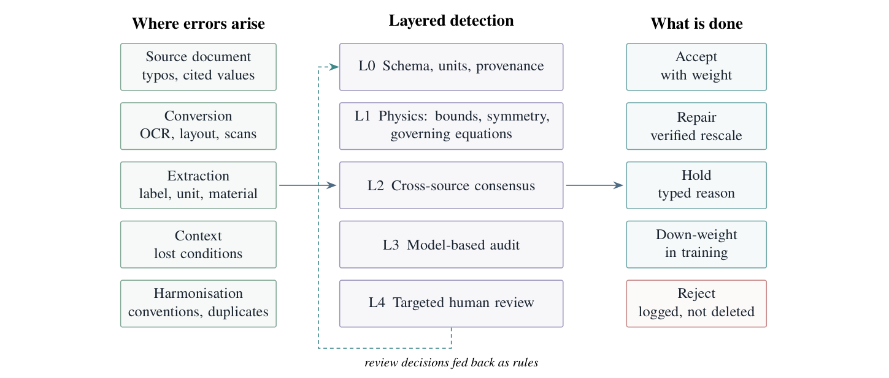
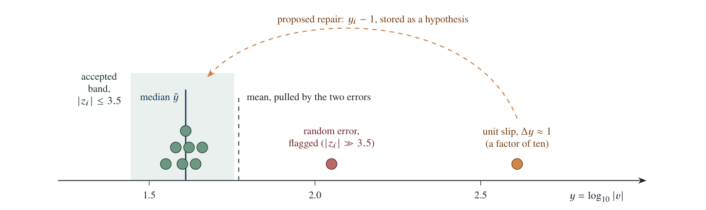
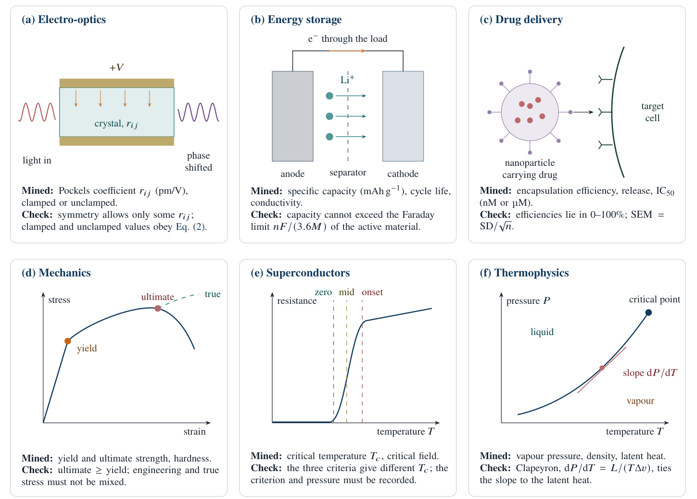
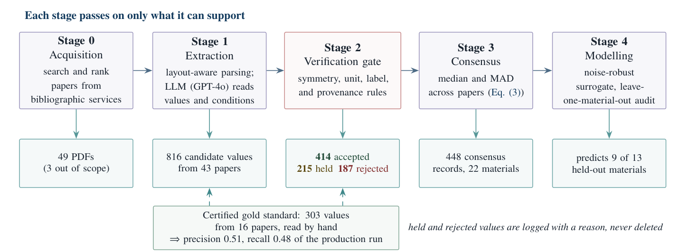
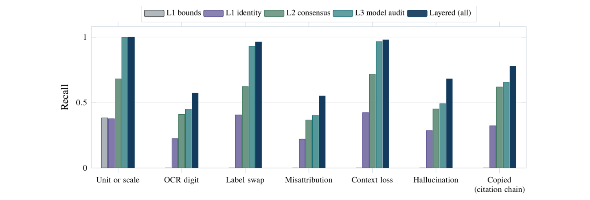
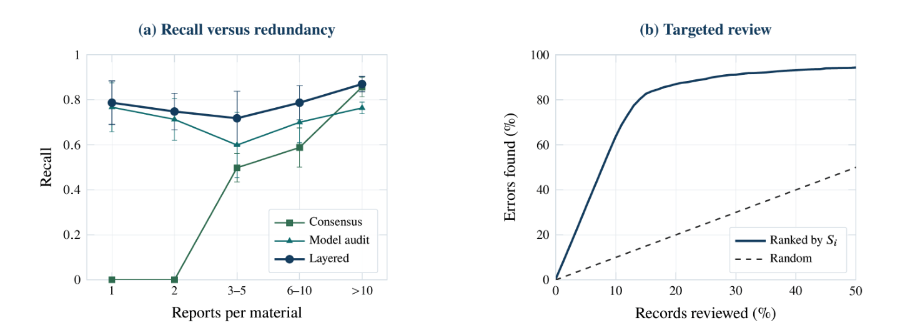
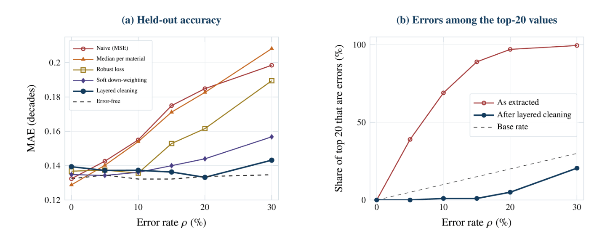

文献数据怎样把材料发现带向错误极值：用物理关系识别抽取错误
论文原文 ↗原文：Achyut Manoj、Advai Aiyer、Andrew Lee、Nayan Saini、Pragya Birla、Dibakar Datta，No Value Is Better Than a Wrong Value: Finding and Handling Erroneous Data in Literature-Mined Datasets for AI，arXiv，2026。官方页面 ·
材料数据常散落在论文中，自动抽取让研究者能建立原本不存在的性质数据库。但一个数字被抽出来，并不等于它已经成为可训练的数据：小数点、单位、张量分量、材料身份和测量条件，只要有一项错位，模型学到的关系就会改变。
这篇工作把文献抽取错误与材料发现的后果连起来。作者以电光材料数据库为例，建立从数据格式、物理规律、跨文献一致性到预测模型和人工复查的分层处理方法，并用真实数据与已知错误的合成数据测试。最有启发性的发现是：优化算法主动寻找极值，恰好也会主动找到被抽取错误放大的数值。
一、一条电光记录为什么远不止一个数
电光材料受到电场作用时，折射率会改变，可用于光调制器。线性电光响应由 Pockels 系数描述，常用单位为 pm/V。不同方向的电场与光学响应对应张量中的不同分量；晶体对称性决定哪些分量可以非零。
作者举出的真实记录是四方 BaTiO₃ 的一个电光系数：105 pm/V，r₃₃₃，非夹持边界条件。非夹持表示晶体可以随电场变形，测得响应包含压电变形带来的附加光学变化。若晶体被固定、不能变形，得到的是夹持条件下的另一组数值。因此，105 既要绑定材料与分量，也要绑定晶相、边界条件、温度、波长和来源。
抽取中出现过很具体的错位：把压电系数与电光系数混淆，把晶向〈110〉读成 110 pm/V，把“5 kV/cm”的电场读成 5 K 温度，或把单位标签改成 pm/V 却忘记改变数值。很多错误仍处在看起来合理的范围内，仅检查数值大小无法发现。

图1｜错误可在原文、转换、抽取、条件绑定和统一格式等阶段产生；不同检测层把记录送往接受、修正、暂存、降权或拒绝等处理路径。
二、方法怎样做：先检查一条记录，再借助其他记录和模型
输入是带有数值、单位、性质标签、材料、条件及来源片段的记录。作者按成本和信息需求依次应用五层方法。
第一层检查记录是否自洽。 单位量纲是否对应目标性质，数值能否在原文片段中找到，数字字段是否与文字字段相符，引用他人的比较值是否被当成本论文新测量。这样先解决字段绑定和来源问题。
第二层把物理规律变成可计算条件。 最直观的是晶体对称性：闪锌矿结构的 InP 只允许特定线性电光分量，若抽到一个被该点群禁止的非零分量，就需要纠正标签或记录。更强的约束来自多个性质间的本构关系。例如，非夹持电光响应应等于夹持响应加上“电场引起形变、形变改变光学响应”的贡献；压电应变系数、压电应力系数和弹性常数之间也有确定关系。
程序把相关数值代入关系式，计算偏离量，再按输入测量的不确定性归一化。若偏离超过三倍传播不确定性，就把相关记录标为可疑。某个数值同时进入几条关系时，还能根据哪些关系一起失效，定位最可能出错的分量。
第三层比较相同物理条件下的独立报告。 对同一材料、分量和边界条件，用中位数及“相对中位数偏差的中位数”（MAD）描述中心与离散程度，减少少数极端值对判断的影响。数量级错误在 log₁₀ 空间中很清楚：差一个单位往往对应原数值差十倍。程序据此提出单位或小数点修正，再回到来源确认。

图4｜正确值形成聚集，中位数较少受极端值拉动；接近整数量级的偏移提示单位或小数点错误。
第四层用模型寻找化学邻域中的异常。 对每条记录，使用没有见过该记录的模型作折外预测，再比较记录值与预测值的偏差。这样，即使一种材料只被报道过一次，也能借助其他相似材料提供线索。作者将这种异常用于复查排序或训练降权，保留对真实异常材料继续确认的机会。
第五层把人工精力集中在最可疑记录。 程序综合物理、共识与预测偏差，按可疑程度排列，再查看原表格和上下文。最终记录带着处理状态和可信权重进入训练；尚不明确的记录留待补充信息。

图3｜电光、储能、药物递送、力学、超导和热物性各有不同记录条件，也各有可利用的对称性、守恒或本构关系。
三、真实数据库说明：初筛通过后，仍有错误需要物理关系识别
作者的电光数据流程在一次运行中处理 49 份 PDF，43 篇产生了 816 个候选值。初始关口接受 414 个、暂存 215 个、拒绝 187 个，共有 402 个没有直接进入接受集合。标签、引用值、性质范围和单位问题是主要原因。这个数包括暂存与超出数据库范围的记录，并非 402 个全部已判定为错误。

图2｜上排连接检索、抽取、规则判断、共识与模型；不同计数分别对应当前运行和整个数据库建设过程。
作者随后从三篇经典张量论文中取出已接受的 112 条记录，与整理好的参考值比较，发现 30 条存在明确缺陷。这时再加入适用于全部相关晶类的对称性规则、标签规范、文字—数值一致性和可用的本构关系，识别出其中 21 条，即70%。
一个例子是 KNbO₃ 的压电系数。抽取的压电应力系数和剪切刚度，通过本构关系给出约 103 pm/V 的应变系数，但数据库保存的是 10.73 pm/V。接近十倍的差异把问题指向单位换算，而不仅仅是一个“离群点”。
在另一项测试中，作者用 BaTiO₃ 和 KNbO₃ 的实测张量作为起点，分别注入十种单值错误，包括单位、小数点、符号和夹持标签错误。物理关系检测出其中 8种，且哪些关系被破坏能够提示出错位置。这展示了利用多个性质相互约束的具体价值。
四、控制基准：组合方法为什么比单一方法更有效
为了知道漏掉了多少错误，作者另造了一套真值已知的“文献”：400种材料，以六个描述符生成性质，每种材料的报告数量不等，约一半只报告一次。然后注入单位偏移、OCR误读、标签互换、材料错配、条件丢失、虚构值和引用复制等七类错误。
在 15%记录出错 的设置中，综合方法达到 81%错误检出率、85%精确率。前者表示真实错误中找到多少，后者表示被标记项中有多少确实错误。物理约束擅长识别明确冲突，跨报告共识利用重复测量，模型则补上单次报告材料的覆盖。

图5｜不同方法识别不同错误类型，深色柱表示组合结果；数值仍很合理的材料错配和OCR错误相对更难发现。

图6｜左图显示单次、两次报告无法依靠共识判断；右图显示按可疑程度查看前15%记录，可找到约83%的错误。
按可疑程度查看全部记录中的前10%，能找到64%的错误；查看前15%，找到83%。这使补查工作围绕可能影响模型的少量记录展开，也让只有一次报道的新材料有机会得到检查。
五、对材料发现的直接后果：错误会集中在榜单顶部
在上述合成基准中，15%的记录出错时，数值最大的20条记录中，平均89%是错误。原因与优化目标直接相关：漏掉小数点、放大单位等错误容易产生极端值，而逆向设计恰好追求极端高性能。模型若把这些值当作标签学习，还会把异常扩散到相邻材料的预测。
分层处理后，同一设置中前20条的错误占比降至约1%。在留出材料上，未经处理数据训练的模型平均绝对误差为0.175个十进数量级；分层清洗并修正数量级错误后为0.136，接近无错误数据的0.132，相差约3%。单靠稳健损失函数或对每种材料取中位数，恢复程度较小。

图7｜左图比较不同数据处理策略的预测误差；右图显示极值选择会放大错误，而清洗显著降低前20条中的错误占比。
这些数值来自规定错误类型和比例的控制基准。它给出的清楚认识是：评价数据库时，整体错误率和平均预测误差之外，还要关注最终优先推荐的材料是否被错误极值占据。
六、数字正确以后，下一道瓶颈是缺失条件
作者还定义了“不可区分比例”Φ：有多少记录在模型所见的全部字段上完全相同，数值却相差超过10%。例如同一材料、同一分量和同一来源的两个数，可能实际对应不同应变或边界条件，但条件没有被抽出来，模型于是接到同一输入的两个答案。
在232条已接受的电光记录中，使用所有已记录条件和来源字段分组，Φ仍为 0.39；只按温度和应变分组时增至 0.72。这使“补齐条件”成为具体的数据建设任务：先寻找能解释数值差异的测量情境，再决定是否需要更多文献或条件分辨的计算。
这篇工作的贡献是将文献错误从抽取端一直追到材料决策端。数据需要连着物理身份和测量条件进入模型；物理关系可以检查单次报告，共识可以利用多次独立报告，模型可以为补查提供顺序。它为文献到材料发现的流程提供了一套可复用的数据处理思路。
原始摘要完整中文翻译
材料科学、化学、能源和医学中的机器学习越来越依赖通过阅读已发表文献建立的数据集，因为许多性质尚无整理好的数据库。自动阅读数千篇论文不可能完全无误。文字识别会误读数字，单位和记号会被混淆，数值会被附到错误的标签、材料或条件上，语言模型偶尔会虚构数值，而一篇论文中的错误还会被后续论文复制。这篇观点文章探讨如何发现这些错误，并使它们不进入AI模型。
借助我们从文献建立电光性质数据库的经验，我们按错误发生的位置及其留下的特征提出错误分类体系，随后描述一套分层检测框架，将数据结构与来源检查、物理可接受性（界限、晶体对称性和控制方程）、跨来源统计共识、基于模型的检查，以及按可疑程度排序的复查相结合。四项演示用于检验该框架。在流程最近一次实际运行中，验证关口拦下816个候选值中的402个，并为每个值记录原因。即便如此，与整理后的参考值比较发现，它从三篇基准论文中接受的112个值仍有30个存在缺陷，而主要依靠适用于所有晶类的对称性规则等无需参考数据的简单检查，就找到其中21个。
在实测的BaTiO₃和KNbO₃张量上，本构恒等关系识别出十种真实感单值错误中的八种，并指出被破坏的数值。在真值已知的控制基准中，组合方法以85%的精确率识别出81%的错误，包括仅报道一次的材料中的错误。清洗使模型在留出材料上的精度恢复到与无错误数据训练模型相差约3%的水平。
未经清洗时，数据中最大的20个数值有89%是错误。这对发现十分重要，因为寻找最佳材料的AI会首先选择最大的值。真实数据还显示了第二个问题：一旦错误数字受到控制，缺失的测量条件就成为主要限制，因为许多电光记录无法依据已保存的条件相互区分。最后，我们提出该领域的发展方向，包括测量抽取器错误率、共享物理规则库，以及能够报告自身质量的数据库。